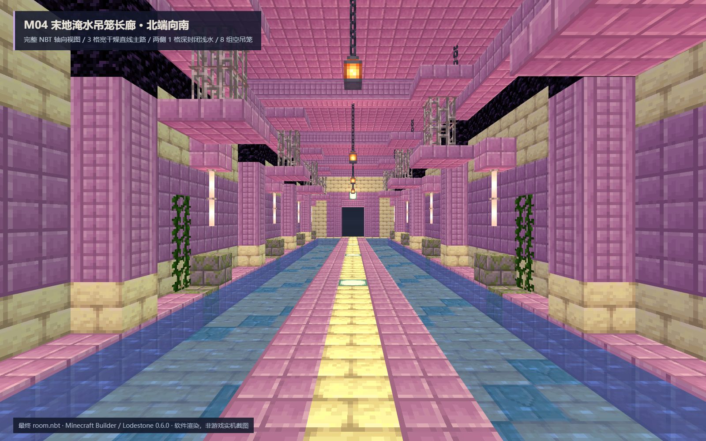
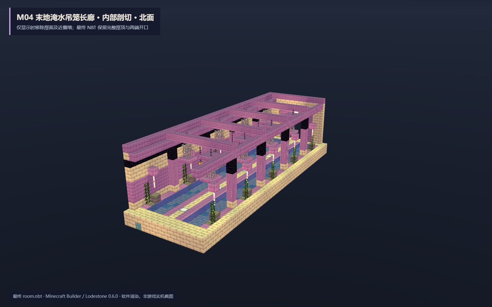
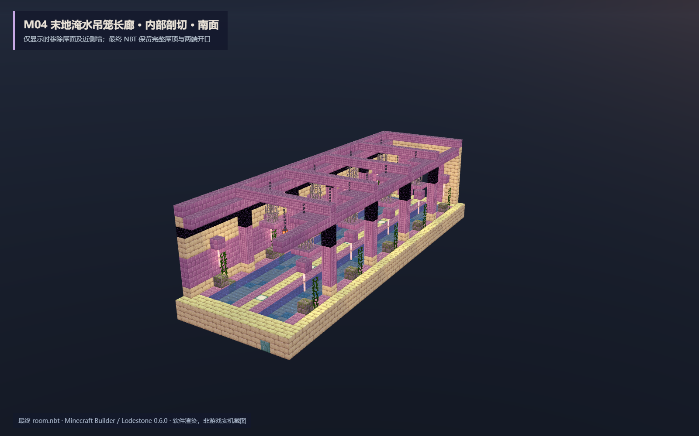
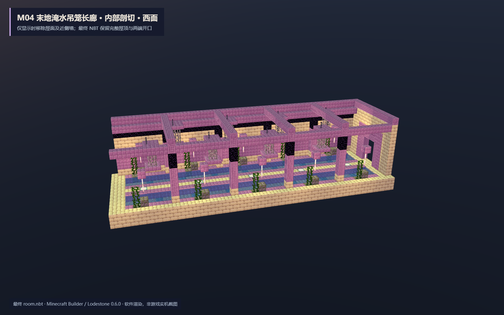
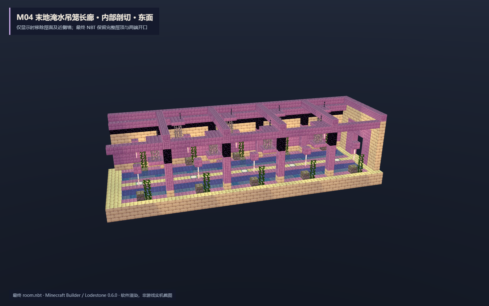
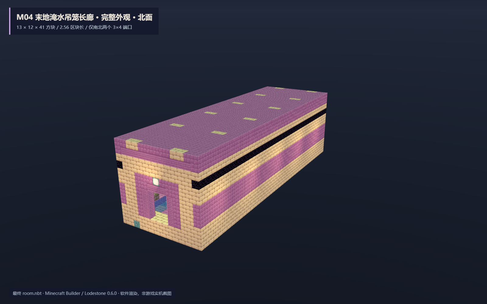
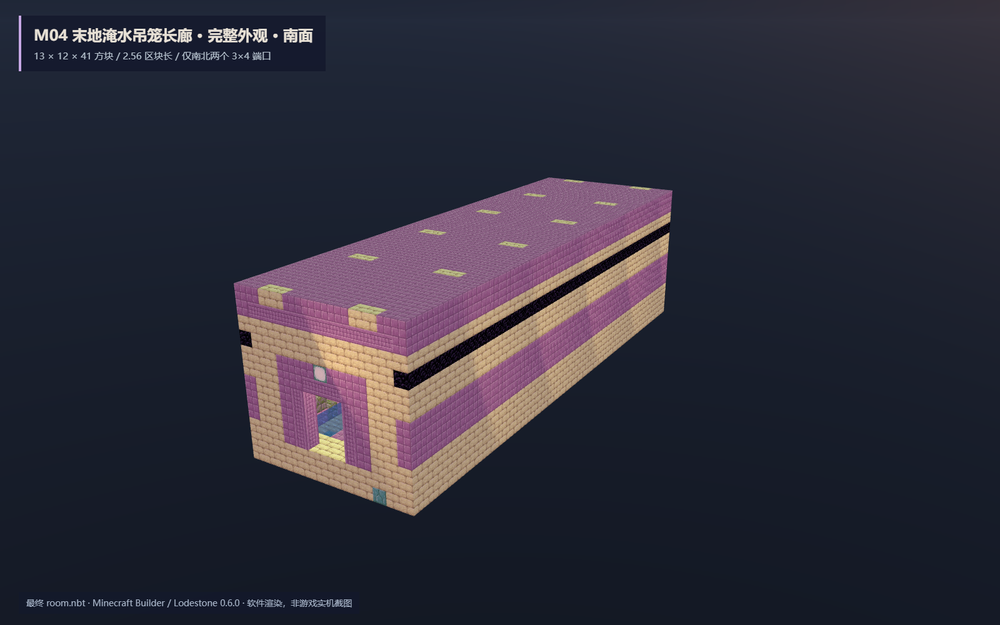
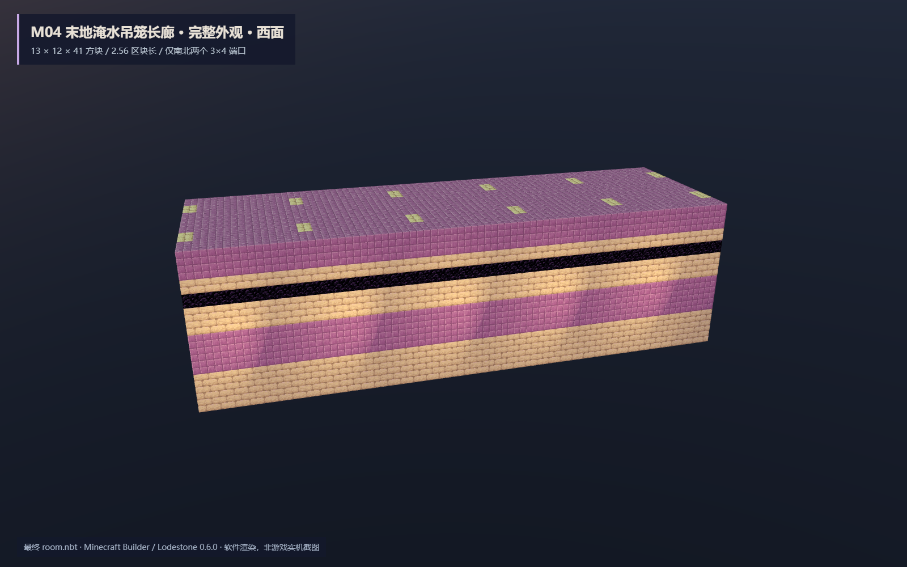
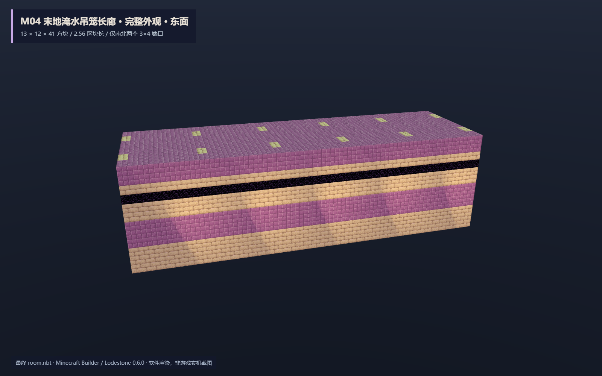
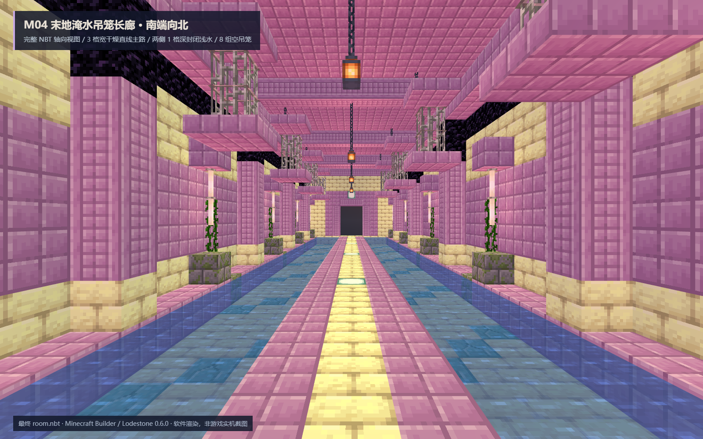

中型一字贯通结构 · 独立交付 · 未部署 · 未读取或修改玩家存档
room.nbt · room.json · QA 汇总 · Forge 四向 / 200 tick 证据 · 交付说明 · 静态 QA · SHA-256 清单

移除屋面与近侧墙以检查内部。最终 NBT 保留完整外壳，不交付剖开版本。









来源：M04-end-flooded.png，SHA-256 537f369f2598d7c3f603011fca9b64e69f2793fe458285bc44da1afdeee10eee。保留末地石 / 紫珀 / 黑曜石 / 灯 / 悬笼 / 潮湿藤蔓；将满幅积水安全改为两侧浅水、中央等高干路。
证据边界：Forge 47.4.10 的原生放置发生于本交付目录中的一次性隔离 GameTest 世界；没有整合包客户端、多人、FT 大厅接路、持久生成标记或部署声明。